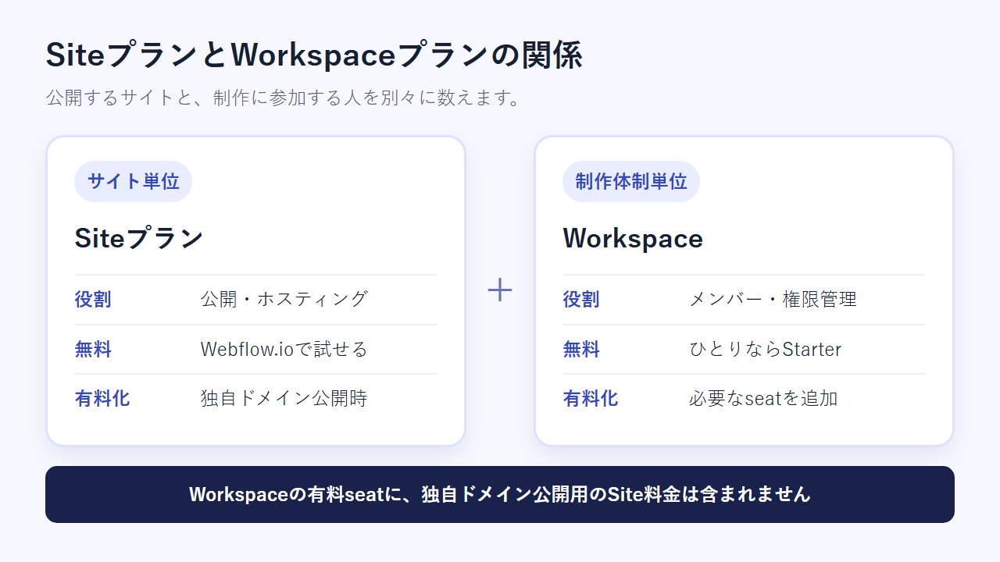
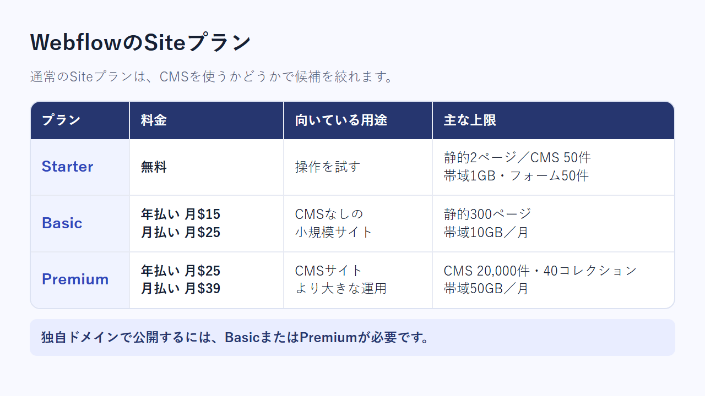
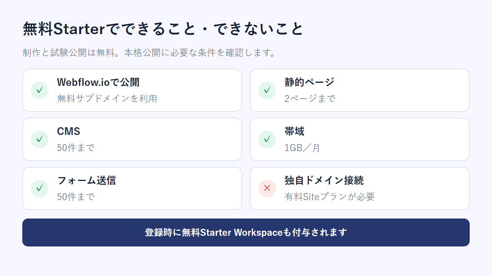
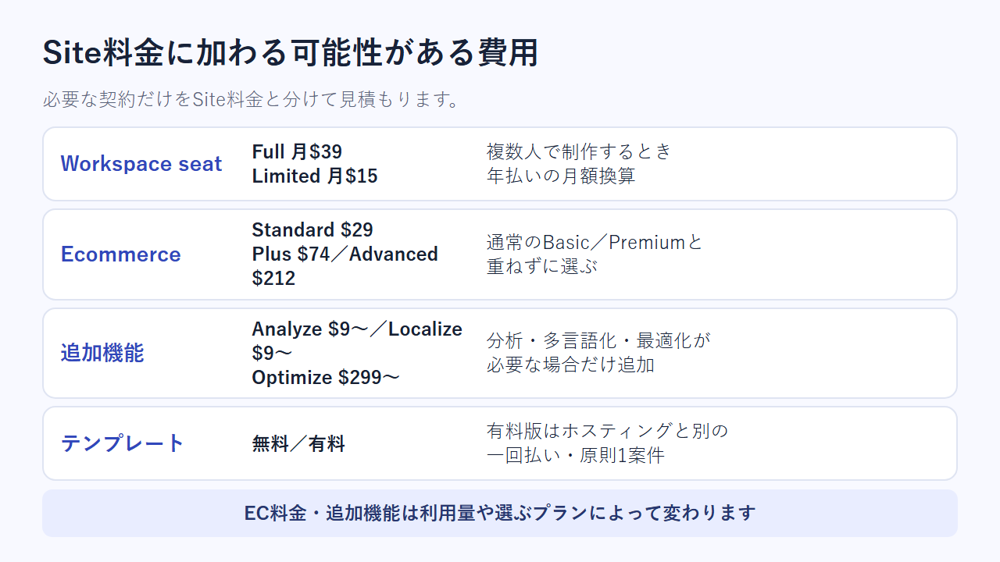
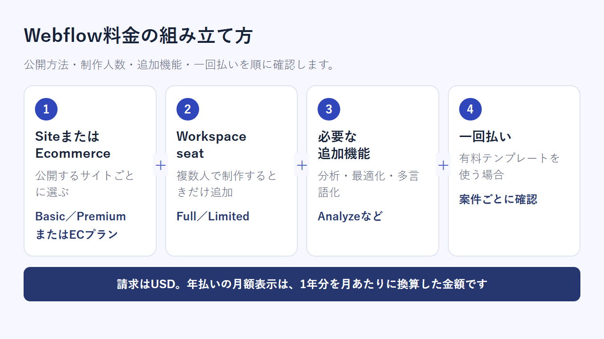
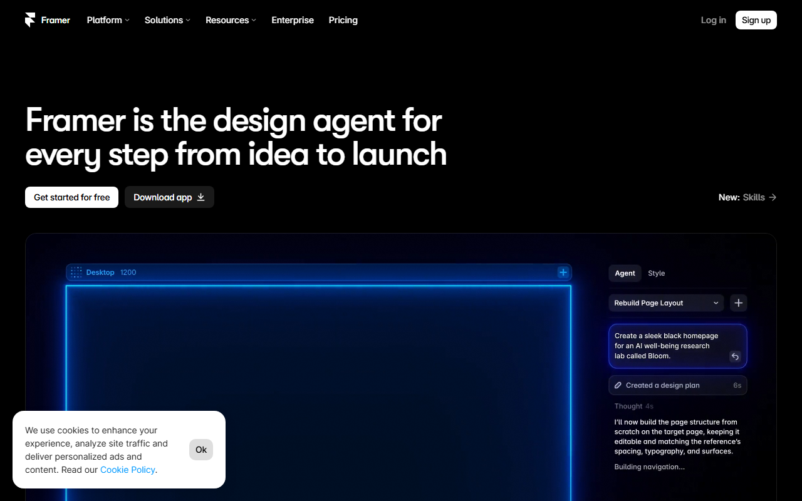

Webflowの料金プラン【2026年版】無料版の制限と有料プランの選び方
Webflowは、Webサイトを設計し、そのまま公開・管理できる制作サービスです。料金体系が複雑なので、この記事ではプラン別の費用と無料枠を中心に紹介します。日本からの支払い方法や解約手順も扱います。
Webflowの料金はSite・Workspace・EC・Platformの4系統
- Starter Site：無料／サイト単位
- Basic Site：年払いで月$15／サイト単位
- Premium Site：年払いで月$25／サイト単位
- Workspace：Starter無料／年払いで1人月$15〜
- Ecommerce：年払いで月$29〜／サイト単位
- Platform：Teamは年契約で月$2,500／1サイト・10席
ひとりで1サイトを公開するなら、まず無料Starterがおすすめです。公開時に独自ドメインが必要なら、BasicかPremiumを選びます。
年払いと月払いの切り替え方が分かります。Starter・Basic・Premiumの内容も一覧で見られます。
SiteとWorkspaceは別々に契約する

公式サイトは英語表示で、画面右上から無料登録を始められます。
Siteはサイト単位、Workspaceは制作体制単位の契約です。料金を見積もるときは、独自ドメインで公開するサイト数と制作人数を分けて数えます。

Siteプランはサイトの公開・ホスティングに払う
Siteプランは、作ったサイトを公開するための契約です。独自ドメインをつなぐときは、サイトごとに有料プランが要ります。
1つのSiteプランを複数サイトで使い回せません。CMSを使わないならBasic、使うならPremiumが主な候補です。
Workspaceプランは制作メンバーと権限管理に払う
登録時に無料のStarter Workspaceが付くため、ひとりで試すだけなら有料seatは要りません。制作担当者を増やす場合、年払いのFull seatは月$39、Limited seatは月$15です。どちらを追加しても、独自ドメインで公開するためのSite料金は別にかかります。
Siteプランの料金と向いているサイト
通常のSiteプランはStarter、Basic、Premiumの3種類です。旧体系のCMS／Businessは、2026年5月の料金改定により新規購入ではPremiumへ統合されました。

BasicはCMSを使わない小規模サイト向け
Basicは、CMSを使わないサイト向けの有料プラン。料金は年払いで月$15、月払いで月$25です。年払いは月額換算の表示で、契約時には1年分を支払います。
上限は静的ページ300ページ、帯域10GB／月で、CMSは含まれません。固定ページ中心で、CMSコレクションを使わないサイトが対象です。
PremiumはCMSやより大きなサイト向け
Premiumは、CMSを使うサイトやBasicの上限を超えるサイト向けのプランです。料金は年払いで月$25、月払いで月$39。2026年5月の料金体系変更により、新規購入では旧CMS／Businessの選択肢がPremiumへ統合されました。
上限はCMSアイテム20,000件、CMSコレクション40個です。静的ページは300ページ、帯域は50GB／月まで。記事や導入事例の件数と月間転送量を見積もり、Basicで足りるかを判断します。足りなければPremiumが候補です。
BasicとPremiumの価格差に加え、CMSや帯域の上限を見比べられます。
TeamとEnterpriseは大規模運用向け
TeamとEnterpriseは、Site料金とWorkspace料金をまとめたPlatform planです。一部のアドオンも含まれ、通常のSiteプランとは契約形態が異なります。
Teamは年契約で月$2,500です。次の内容が含まれます。
- 1サイト
- 静的ページ500ページ
- CMSアイテム20,000件・CMSコレクション100個
- 帯域最大30TB／月
- Full seat 5席・Limited seat 5席
- 24時間365日の優先サポート
Enterpriseは個別見積もりで、サイト数と各種上限が個別に決まります。seat数とサポート内容も同様です。
無料Starterでできること・できないこと
無料Starterでも、サイトを作ってWebflow.ioサブドメインで公開できます。独自ドメインをつなぐときや無料枠では足りないときに、有料Siteプランへ移ります。

Webflow.ioサブドメインなら無料で公開できる
Starter Siteに含まれる範囲は次のとおりです。
- Webflow.ioサブドメインでの公開
- 静的ページ2ページ
- CMS 50件
- 帯域1GB／月
- フォーム送信50件
登録時には無料Starter Workspaceも付与されます。サイト制作からサブドメイン公開まで進め、自分に合うか試せます。
独自ドメインと本格運用は有料Siteプランが必要
無料Starterでは独自ドメインを接続できないため、有料Siteプランが必要です。静的ページやCMSだけでなく、帯域やフォーム送信数が上限を超えた場合も有料化を検討します。
無料版の公開先はWebflow.ioサブドメインに限られます。Starterだけでは、独自ドメインを使えません。
Workspace・EC・アドオン・テンプレートは別料金になる
Siteプランの表示額だけで総額が決まるとは限りません。制作人数とECの有無を決めたうえで、多言語化や分析、有料テンプレートの費用も加えます。

Workspaceの追加seatは制作人数と権限で選ぶ
追加seatは、広い編集権限が必要な人にはFull、担当範囲を限定する人にはLimitedを割り当てます。年払いの料金はFullが月$39、Limitedが月$15です。
まず、誰が何を編集するのかを決めます。そのうえで、公開するサイト数と制作に参加する人数を別々に数えます。
EC・多言語化・分析機能は必要なものだけ追加する
ECサイトを作る場合はEcommerce Siteプランを選び、通常のBasic／Premiumには追加しません。年払いの月額換算はStandardが$29、Plusが$74、Advancedが$212です。
追加契約は、Optimizeが月$299〜、Analyzeが月$9〜。LocalizeはEssentialが月$9〜、Advancedが月$29〜です。利用量によって料金が変わるため、ECのプラン料金とは分けて見積もります。
無料テンプレートと有料テンプレートはプラン料金と分けて考える
無料で使えるのは、テンプレートとcloneable。有料テンプレートはホスティング料金とは別の一回払いです。ライセンスは原則として1案件用のSingle-Useで、価格は各商品ページに表示されます。
日本から支払うときの総額と請求書の扱い
日本から主要カードで契約できますが、請求はUSDです。総額を出すときは、SiteとWorkspaceのseatを別々に計算し、必要なアドオンとテンプレートの代金を加えます。

年払い・月払いと円換算の見方
Basicは年払いの場合、月額換算で$15です。1ドル=159円なら約2,385円。直近営業日の為替を丸めた目安なので、実際の円請求額は為替とカード会社の換算条件で変わります。予算管理はUSDが基準です。
年払いの月額表示は、1年分を月あたりに直した金額です。契約画面では、請求周期と支払総額を確かめます。
対応カード・USD請求・請求書を確認する
対応ブランドは次のとおりです。
- Visa
- Mastercard
- American Express
- Discover
- JCB
- Diners Club
クレジットカードとデビットカードを使えます。ただし、国外発行のデビットカードは、国際継続課金への対応を発行銀行へ確かめるよう案内されています。
請求書は、Workspace設定のBillingから契約ごとにPDFでダウンロードできます。通貨はUSD。複数契約を1枚にはまとめられません。経理・税務上の扱いは税理士に確認してください。
ひとりで1サイト、CMSサイト、チーム制作の費用を組み立てる
よくある契約パターンごとに、費用を組み立てると次のようになります。
- ひとりで固定ページ中心のサイトを公開：Basicのみ。Starter Workspaceで足りれば有料seatは不要
- ひとりでCMSサイトを公開：Premiumに、必要な追加機能とテンプレート代を加える
- ECサイトを公開：Standard／Plus／Advancedから選ぶ。Basic／Premiumとは重ねない
- チームで制作：通常はサイトごとのSite料金に必要なFull／Limited seatを加える。Team／Enterpriseは要件が大きい組織向けのPlatform planとして別に比較する
SiteとWorkspaceが別枠で表示されるため、必要な契約を分けて見積もれます。
Studio・WordPress・Framerとの料金の違い
Studioは円建てのSaaSです。WordPressはソフトウェア本体が無料で、Framerはホスティング込みのプラン制です。同じWeb制作でも、料金に含まれるものが異なります。
日本語環境と円建てを優先するならStudio

公式サイトは日本語で表示され、「無料ではじめる」ボタンから登録できます。
Studioの管理画面とエディタは日本語に対応。公式ヘルプも日本語で、日本居住者向けの料金表示は円建て・税込です。Freeは月0円で、50ページまで使えます。上限はCMSモデル3つ、公開CMSアイテム100件。独自ドメインをつなぐには、有料のMini以上を選びます。
有料の入口はMiniが年払いで月590円、Personalが年払いで月1,190円です。円建ての予算と日本語環境を優先する場合の候補です。
Studioはサイト単位の料金で、独自ドメインが必要ならMini以上を選びます。CMSの規模が大きい場合は、Personal以上も候補です。
自分で保守できるならWordPress

日本語版の公式サイトには、テーマとプラグインの情報に加え、サポートへの入口もあります。
WordPress.orgのソフトウェア本体にはライセンス料金がかかりません。ただし、次のものは別に用意します。
- 独自ドメイン
- ホスティング
- 有料テーマ
- プラグイン
- 保守
更新やバックアップに加え、契約内容に応じたセキュリティ対策も自分で行います。そのため、Webflowの月額とは単純に比べられません。
WordPressは、ドメインやサーバーの契約内容と保守方法で総額が決まります。サーバー管理も自分で担える人向けです。
デザイン中心ならFramerも候補

公式サイトは英語表示で、「Get started for free」から無料で始められます。
FramerはFreeが$0、Basicが年払いで月$10、Proが年払いで月$30です。Freeの公開先はFramerサブドメイン。独自ドメインにはBasic以上が必要です。BasicにはCMSコレクション2つと帯域50GBが含まれます。Proの上限はCMSコレクション10個、帯域100GBです。
Framerは独自ドメインとCMSを含む、分かりやすい料金構成です。日本発行カードへの個別対応は確認できておらず、JCBとPayPalも同様です。
解約・ダウングレードと返金条件
SiteとWorkspaceはそれぞれの設定画面から無料Starterへダウングレードします。手続き後は原則として、現在の契約期間が終わるまで利用できますが、返金条件は初回購入分と更新料で異なります。
SiteとWorkspaceはそれぞれStarterへダウングレードする
Siteプランの手続き先は「Site settings > Plans」。Workspaceプランは「Workspace settings > Plans」です。どちらか一方のダウングレードだけでは、もう一方の自動更新まで止まるとは限りません。
両方を契約している場合は、各設定画面で更新状態を確認します。公開中のサイトや制作メンバーへの影響も確かめておきます。
初回購入の返金条件と更新料の扱いを確認する
新規のSite／Workspaceは、購入後14日以内なら返金を申請できます。更新料は対象外。継続しない場合は、次回更新より前にStarterへのダウングレードを済ませます。
解約を忘れ、更新後に気づいても、更新料は戻りません。年払いを選ぶ前に、次の更新日も控えておきます。
現在のプラン名と、移行先になる無料Starterの内容を見比べられます。
まとめ：迷ったら無料Starterから始める
契約前に決めたいのは、次の4項目です。先に決めておけば、Site／Workspace／Ecommerce／Platform planを混同せずに選べます。
契約前に確認する4項目
- 独自ドメインで公開するか
- CMSで記事や事例を更新するか
- Webflow上で制作・編集する人は何人か
- ECサイトを作るか、多言語化や分析を追加するか
独自ドメインだけが必要でCMSを使わないならBasic、CMSが必要ならPremium。ECならEcommerce Siteプランを選びます。複数人で制作する場合は、Full／Limited seatを必要な数だけ追加します。
目的が固まったら必要なプランだけ追加する
まず無料Starterで制作とWebflow.io公開を試します。上限や機能が足りなければ、その分だけ有料契約へ切り替えます。
Starterの無料範囲とBasic・Premiumの公開条件を、申込前にもう一度見比べられます。